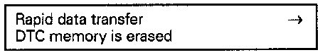

How to Clear Diagnostic Trouble Codes (DTC's)
Requirements:- Malfunctions were repaired.
- DTC memory was checked once more.
V.A.G. Display:

- Press buttons -0- and -5- to select "Erase DTC memory" function 05.
V.A.G. Display:

- Press -Q- button to confirm input.
V.A.G. Display:

- Press -> button.
V.A.G. Display:
V.A.G. Display:

NOTE:
- If "DTC memory is not interrogated" is displayed, the correct test sequence was not followed.
- Follow the test sequence exactly First check DTC memory (function 02), then erase DTC memory (function 05)
End Output:
- Press buttons -0- and -6- for function 06, "End Output"
V.A.G. Display:

- Press -Q- button to confirm input.
V.A.G. Display:

- Switch ignition off.
- Disconnect VAG 1551 Scan Tool.